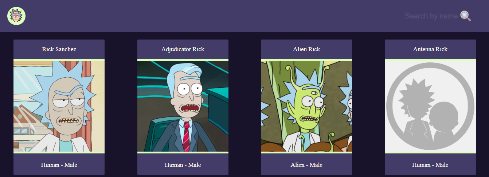

Basic CRUD
A very basic crud i made, the back on NestJS and the front using Angular Material to make it quicker

Rick and Morty api integration in angular,responsive styles made in sass by myself, angular router usage, organized into components
It has pagination...
It's fully responsive and when you click into a character you will see the details of him
A very basic crud i made, the back on NestJS and the front using Angular Material to make it quicker
A some kind of copy of Instagram on the backend, it's not finished yet, but it's the most complex of my projects, it has authentication, authorization by roles, image uploads, a docker made database by typeorm for postgres, pagination and i don't remember what else...
You can see all this projects on my GitHub repository